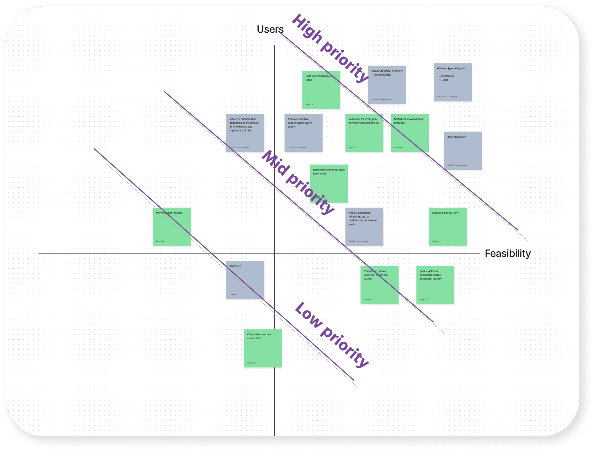
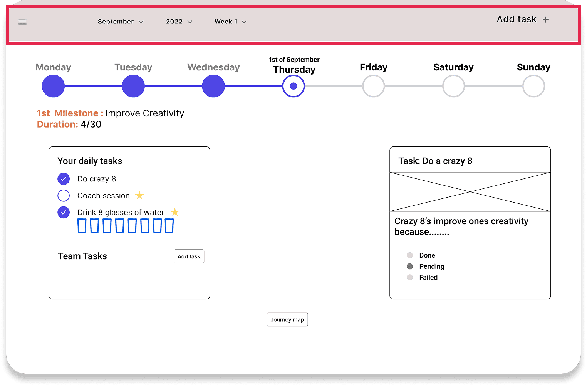
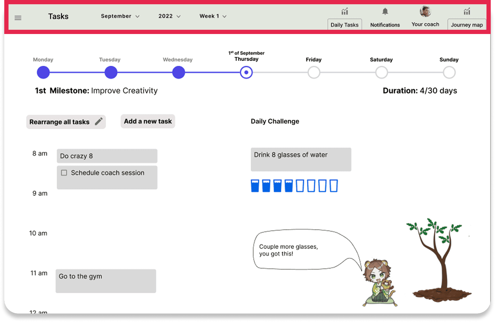
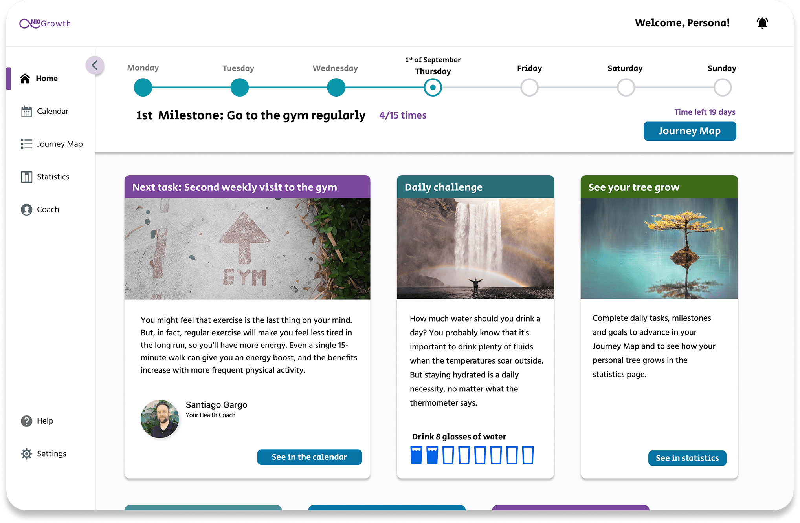
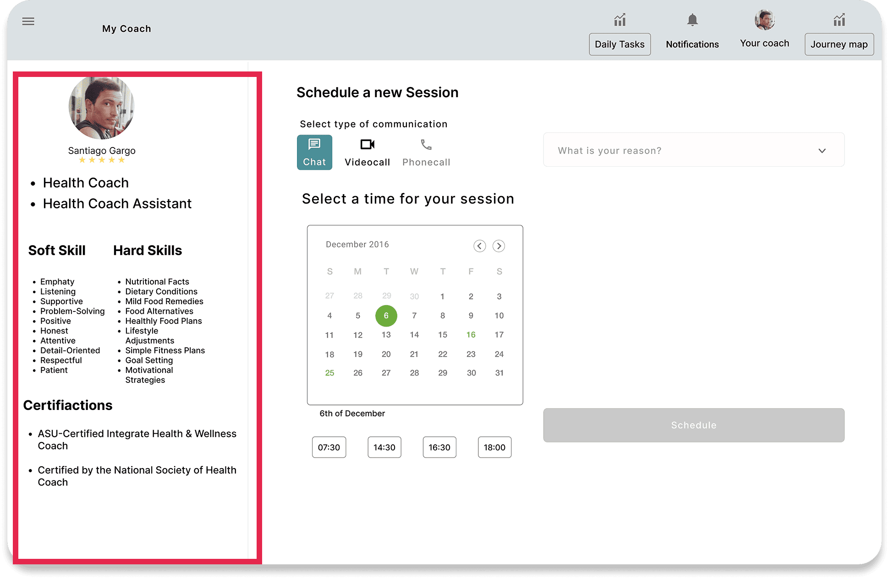
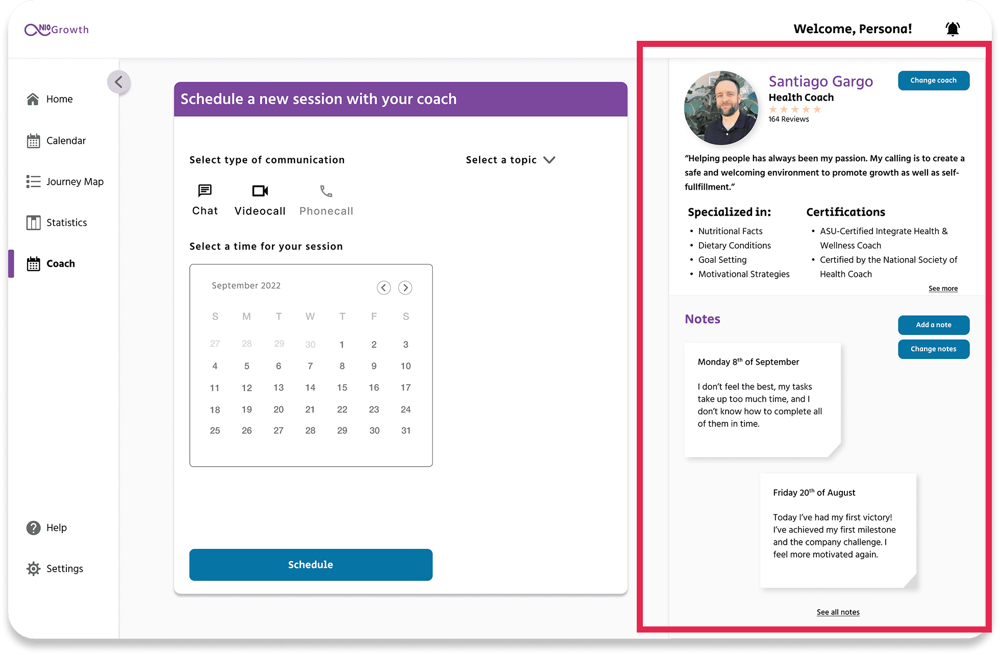
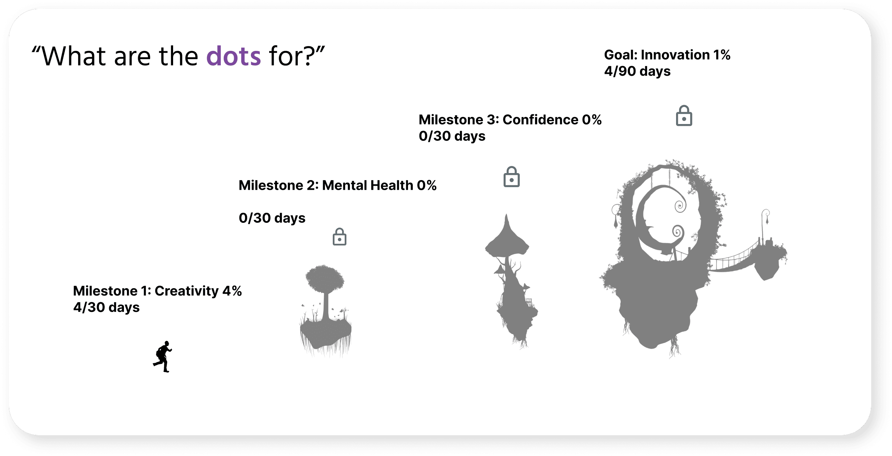
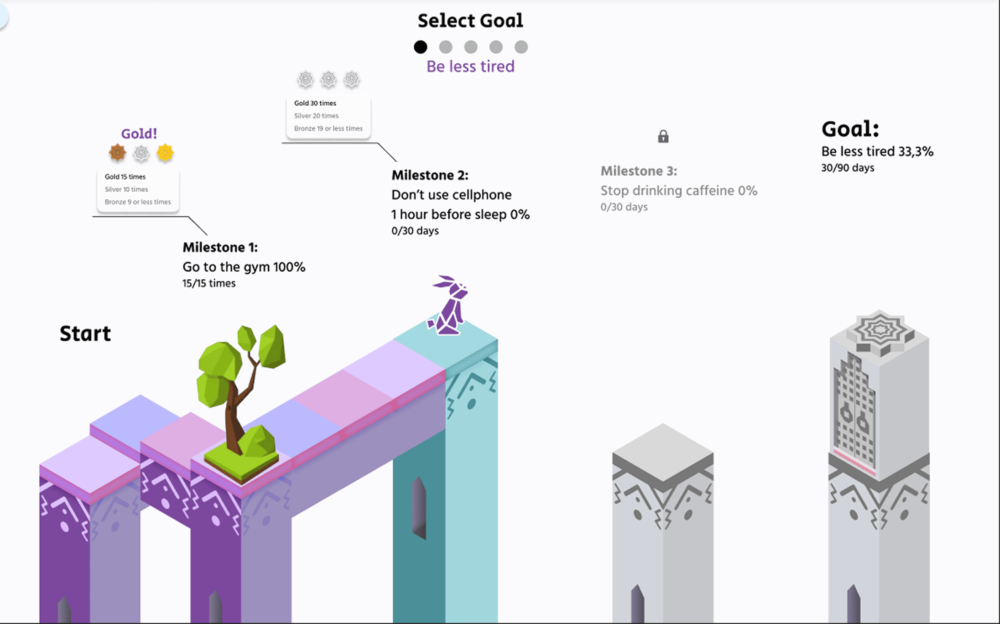
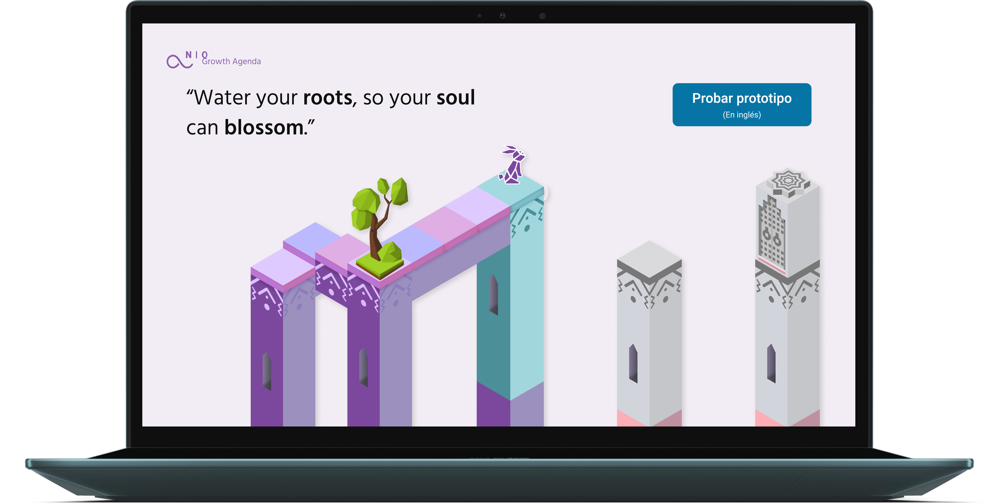

Una agenda de crecimiento que no pareciera una agenda
Diseño de la agenda de crecimiento y la interacción con el coach para NIO, en un equipo de 3 durante 2 semanas.
Contexto
NIO es un SaaS que ayuda a los empleados de una empresa a crecer a nivel personal y profesional con el apoyo de un coach, partiendo de una idea clara: el bienestar de las personas también impulsa los objetivos de la empresa. Nuestro encargo era diseñar dos piezas: la agenda de crecimiento, para que cada persona pudiera plantear sus objetivos y convertirlos en hábitos, y la interacción con su coach a lo largo de ese proceso.
NIO nos dio el research, las personas y el análisis de competidores ya hechos, así que nuestro trabajo se centró en la interfaz. Podíamos elegir entre app o web, y elegimos web porque la mayoría de las ideas encajaban mejor ahí. Dentro del equipo, me encargué de los tests de usabilidad y del diseño en baja y alta fidelidad. Todo el proyecto se hizo en inglés, porque era el idioma de trabajo que pidió el cliente, por eso las pantallas que verás a continuación están en inglés.

El reto
El cliente quería algo cercano y amigable, lejos de la típica herramienta profesional, pero no nos dio referencias claras de cómo debía verse. Parte del trabajo fue interpretar qué significaba "user-friendly" para ellos y convertirlo en decisiones de diseño concretas.
Cómo decidimos en equipo
Partimos de los competidores que NIO tenía como referencia, para entender qué tono y qué funcionalidades esperaban.

Cada uno aportó sus ideas de funcionalidades y las fuimos priorizando juntos en una matriz de valor para el usuario frente a viabilidad, hasta llegar a un acuerdo.
Conclusiones
- Amigable
- Estilo videojuego
- Fácil y divertida
- Con personalidad
- Creíble
- Que no parezca un calendario
La apuesta: estilo videojuego
Para que el progreso fuera motivador y no una lista de tareas más, nos inspiramos en videojuegos con un avance colorido y de aventura. El color también responde a esa idea: el morado, asociado a la visión, y el verde azulado, al crecimiento y el equilibrio.


Era una decisión arriesgada para un producto de entorno laboral, pero en los tests a la mayoría de personas les gustó y no lo percibieron como infantil.
Lo que cambió tras testear
Los tests con usuarios nos hicieron cambiar tres partes clave de la app.
Home

El propósito de la app no se entendía y resultaba confuso.

La navegación superior no era suficiente

“Más claro, más completo, y me gusta porque es fácil ubicarse”
La barra superior era confusa y no llamaba la atención. En los tests, la gente no sabía en qué sección estaba y necesitaba demasiados pasos para hacer cualquier acción. La pasamos a un sidebar, donde todo está ordenado y es fácil ubicarse.
El coach

El coach es una pieza central de la app, pero en los tests vimos que tenía demasiada información innecesaria. Nos quedamos solo con lo importante.

Invertimos el orden de las secciones, porque empezar la interacción por la izquierda era más rápido y efectivo. También ajustamos los colores, que no funcionaban visualmente.
Journey map
“¿Para qué son los puntos?”

Los textos y etiquetas generaban confusión.

La idea era que fuera divertido, como un videojuego, pero la sección no se sentía conectada con el resto de la app. La adaptamos para integrarla mejor con la temática.
Resultado
Entregamos el prototipo de alta fidelidad de la plataforma web y el cliente quedó satisfecho con el diseño.

Ver prototipo ↗ Probar el prototipo en Figma (en inglés) →Aprendizajes
Lo que más me llevo es cómo trabajamos en equipo. No siempre coincidíamos, sobre todo con los colores, pero lo resolvimos repartiendo según lo que mejor se le daba a cada uno: una compañera llevó los colores y lo que debían transmitir, y mi otro compañero y yo, fans de los videojuegos, aportamos las ideas más originales.
Hablábamos cada día para decidir qué haría cada uno, como un daily, y eso me enseñó a resolver problemas mucho más rápido. Además, empecé a mejorar en UI, prototipado y design system, con muchos trucos de Figma para ganar tiempo.